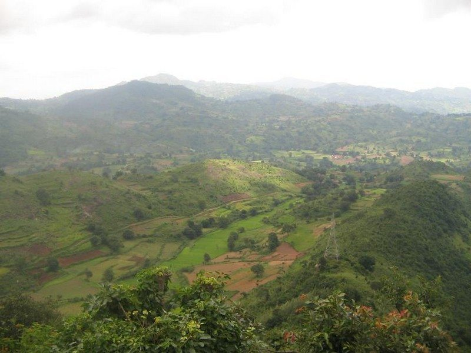
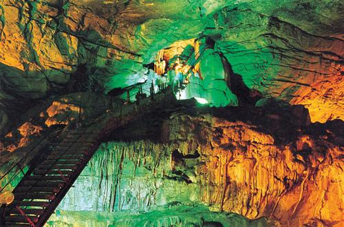
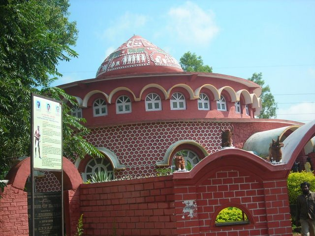
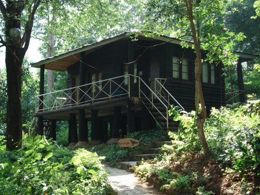

AnanthagiriAt a distance of 26 km from Araku, 85 km from Vizag & 660 km from Hyderabad, #2 of 20 Places to Visit in Araku Valley Distance (From Araku Valley): 30 Kms Trip Duration (Including Travel): 1-2 Hours Transportation Options: Bus / Cab |

Borra CavesAt a distance of 36 km from Araku, 88 km from Vizag & 662 km from Hyderabad, #1 of 20 Places to Visit in Araku Valley Distance (From Araku Valley): 36 Kms Trip Duration (Including Travel): 3-4 Hours Transportation Options: Bus / Cab |

Tribal MuseumAt a distance of 200 m from Araku Bus Station, Araku Tribal Museum is a wonderful #4 of 20 Places to Visit in Araku Valley Distance (From Araku Bus Station): 0.2 Kms Trip Duration (Including Travel): 30 Mins - 1 Hr Transportation Options: Walk/Trek Travel Tips: None |

Tyda Nature CampAt a distance of 40 Kms from Araku, 70 Kms from Vizag & 632 Kms from Hyderabad, Distance (From Araku Valley): 40 Kms #11 of 20 Places to Visit in Araku Valley Trip Duration (Including Travel): 1-2 Days Place Location: Near Anantagiri Transportation Options: Bus / Cab / Trai |